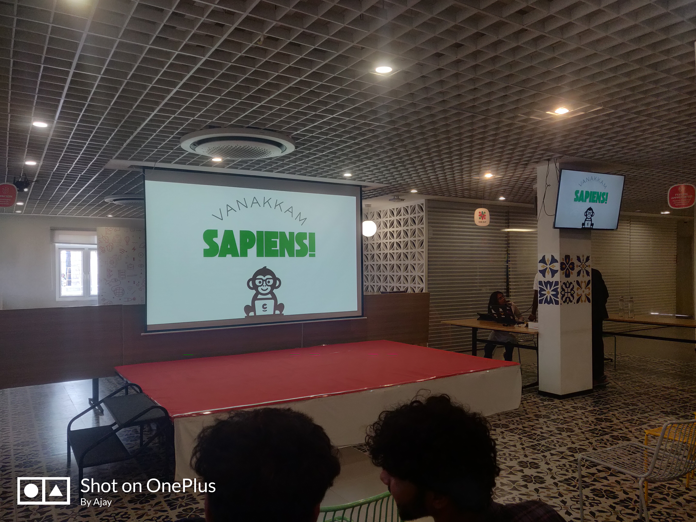

Introduction: The Power of Execution
The startup ecosystem thrives on bold ideas—but ideas alone don't create value. Execution does. This was the central theme of the Code Sapiens x Tamilpreneur event, where innovators, developers, and entrepreneurs gathered to explore the art of building products that matter.
Over the course of a mini ideathon, teams of four competed to conceptualize, prototype, and pitch SaaS and Micro SaaS solutions in real-time. The experience wasn't just about winning; it was about understanding what it takes to ship products in today's competitive landscape.
Prototyping & Rapid Development: Speed as a Superpower
Speed is a superpower in product development. During the ideathon, teams had limited time to move from concept to prototype—a constraint that forced clarity of thinking. Rather than debating endlessly about perfect features, we learned to identify the core value proposition and build the minimum viable version quickly.
The lesson was profound: every clickable mockup, every automation script, every quick proof-of-concept validated assumptions that hours of discussion could never match. This mindset shift—from perfectionism to pragmatism—is something every product builder needs to internalize.
Our team discovered that the first working prototype, no matter how rough, provided more value than the most beautifully designed mockup. Real feedback from users (in this case, judges and peers) revealed what we got right, what we missed, and what needed refinement—insights that shaped our final pitch.
The SaaS & Micro SaaS Opportunity
Our mentors unpacked the explosive growth of SaaS and Micro SaaS solutions. The beauty of these models lies in their simplicity: identify a specific pain point, build a focused solution, and charge a recurring subscription. Unlike traditional software, you're not competing on feature bloat—you're competing on solving one problem incredibly well.
Micro SaaS is particularly fascinating because the barrier to entry is lower than ever. A single developer can now build, deploy, and maintain a profitable SaaS product. The event highlighted real examples of successful Micro SaaS ventures launched by solo founders, proving that you don't need a massive team or unlimited funding to create impact.
- Low Barrier to Entry: Start with minimal capital and validate product-market fit early
- Recurring Revenue: Subscription models create predictable, sustainable revenue
- Scalability: With the right architecture, you can grow without proportional cost increases
- Responsiveness: Small teams can pivot quickly based on user feedback
The Power of Shipping: Imperfect > Unreleased
Here's what stuck with me: shipped products are more valuable than perfect ideas. During the ideathon, one team shipped a working prototype; another spent hours debating architecture and didn't. When it came time to demo, the first team had real feedback from users (even if those users were event judges). The second had theories.
This is the difference between builders and dreamers. Builders ship imperfect things and iterate. They understand that the market will teach you what your customers actually need far better than your own assumptions. Shipping creates feedback loops; perfection creates stagnation.
I witnessed firsthand how a team's willingness to show rough code, incomplete features, and early versions of their product generated infinitely more useful feedback than polished presentations ever could. The critique was honest, specific, and actionable—exactly what a builder needs to improve.
Ideathon Insights: Team Dynamics & Execution
Working in a team of four taught me that complementary skills outperform individual brilliance. Our team mixed developers, designers, and business-minded thinkers. Conflicts arose—about feature scope, design choices, and strategy. But those disagreements pushed us toward better decisions than any one of us would've made alone.
The ideathon also revealed something crucial: communication beats complexity. Explaining your product to a teammate forced clarity. That same clarity made it easier to pitch to judges later. If your team doesn't understand what you're building, your customers won't either.
Key Team Lessons
- Complementary Expertise: Diverse perspectives challenge assumptions and elevate outcomes in ways single-discipline teams cannot achieve.
- Clear Communication: Explaining ideas to teammates creates clarity that translates directly to customer communication and product design.
- Role Clarity: When everyone knows their responsibility, execution accelerates and dependencies are minimized.
- Bias Toward Action: Teams that decide fast and iterate beat teams that wait for perfect information.
Key Takeaways
Ship Fast, Iterate Faster
The perfect product is the enemy of progress. Launch, gather feedback, and improve based on real user input rather than assumptions.
Micro SaaS is Democratized Entrepreneurship
You don't need massive teams or VC funding. A clear problem, focused solution, and persistent execution can build profitable products.
Constraints Breed Creativity
Limited time forces focus. Limited budget forces efficiency. Embrace constraints—they push you toward better solutions.
Diversity Drives Better Decisions
Complementary teams outperform individual experts. Different perspectives challenge assumptions and elevate outcomes.
Talk to Your Users
Real feedback, even harsh critique, is gold. It saves you from building the wrong thing and guides you toward product-market fit.
Personal Reflection: A Mindset Shift
This event shifted how I think about projects. I've always been drawn to the technical depth of development, but Code Sapiens reminded me that shipping is a feature, not a distraction. The most technically brilliant product nobody uses is a failure. The simplest product that solves a real problem is a success.
I'm taking these lessons into everything I build going forward—from side projects to professional work. Speed without recklessness. Focus without narrowness. Ambition tempered by pragmatism. These principles feel foundational to building products that matter.
The startups that will define the next decade won't be built by perfectionists—they'll be built by doers. Events like Code Sapiens x Tamilpreneur are incredible because they create space for people to practice being doers. If you're sitting on an idea, this is your sign: stop waiting. Build something, ship it, and let the market be your guide.
Event Highlights - Photo Gallery
Experience the energy and collaboration from the Code Sapiens x Tamilpreneur ideathon. These images capture the brainstorming, prototyping, and pitching that defined the event.
Looking Forward
Participating in this ideathon reinforced my conviction that in today's world, execution beats perfection. The best way to learn how to build products is to actually build them, ship them, and iterate based on feedback. Waiting for the "perfect" idea or "perfect" conditions is a trap.
Code Sapiens x Tamilpreneur provided invaluable practical experience in product development, team dynamics, and the realities of building SaaS products. I'm grateful for the mentorship, the collaboration with my team, and the clarity this experience brought to my approach to building products.
If you're serious about entrepreneurship or product development, seek out these kinds of events and experiences. They'll teach you more in a day than months of theoretical study. Now it's time to apply these lessons and build something great.